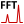

- Generated on Thu Sep 10 2020 21:05:14 for Hopsan by
 1.8.20
1.8.20
|
Hopsan
|
Hopsan has built-in tools for Nyquist diagrams, Bode plots and frequency spectrum.
Bode and Nyquist plots can be generated from the "Transfer Function Analysis" icon in the toolbar in the plot window. To use this the current plot tab must contain two curves, representing the input and the output signal.
| Transfer Function Analysis |
A dialog will appear, where input signal and output signal can be selected. It is also possible to limit the frequency range. This is useful because numerical problems often occurs at high frequencies. You can also choose whether you want to create a Bode plot, a Nyquist plot or both. When clicking "Go", a new plot tab will appear for each generated plot.
It is possible to generate a frequency spectrum for a curve in the plot window. This is accessed by clicking the Frequency Spectrum button in the curve control panel (below the plot area).
|  | Frequency Analysis |
A dialog will appear, where it is possible to choose whether to use logarithmic scaling or power spectrum The latter means that the square of the frequencies are used, to give a better picture of the energy contents. After clicking "Go," a new plot tab with the frequency spectrum will appear.